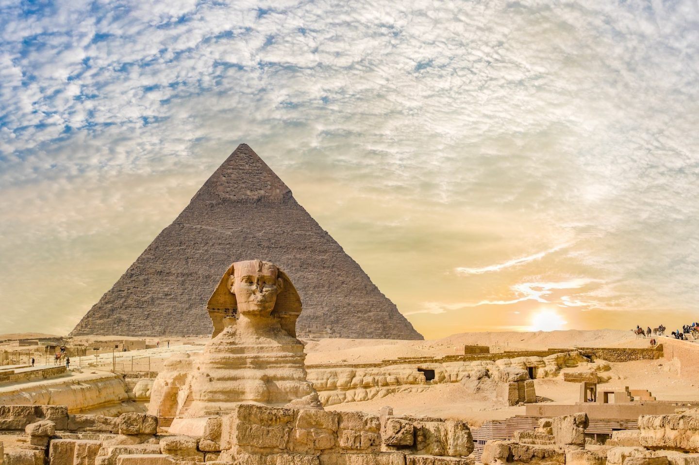
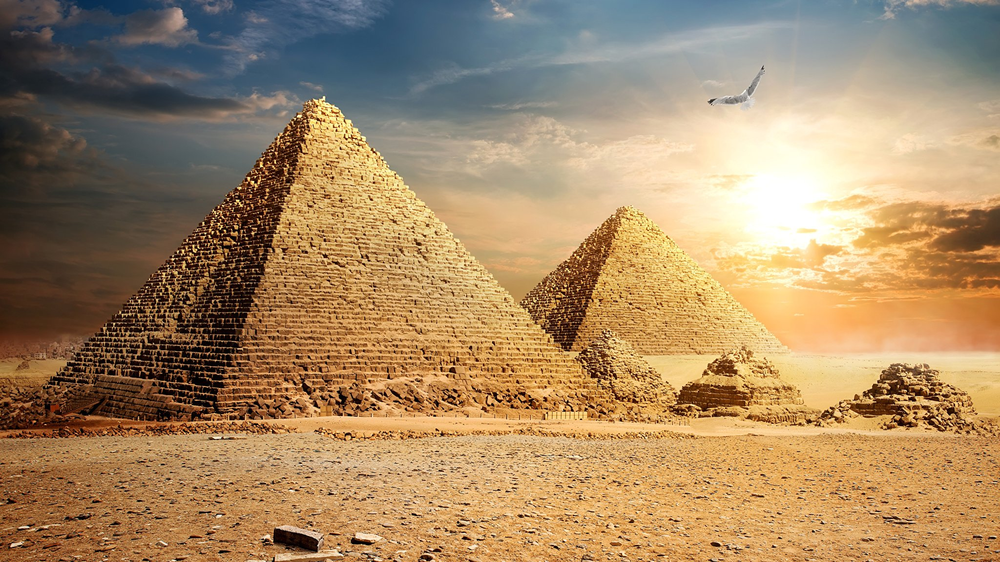
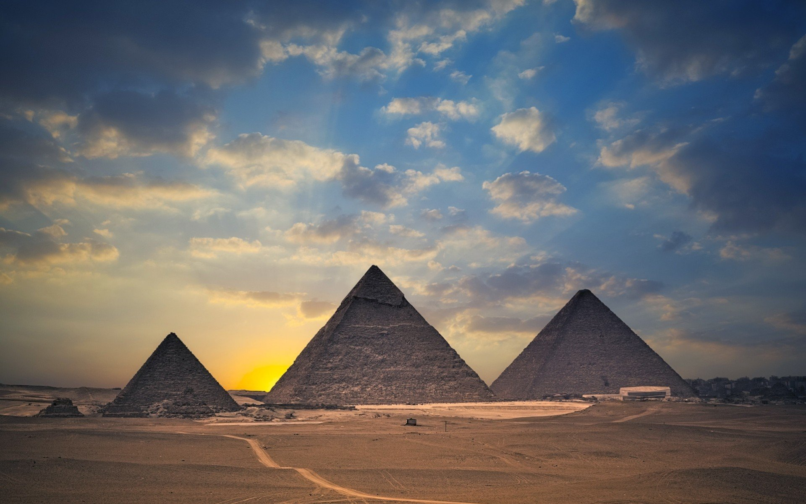
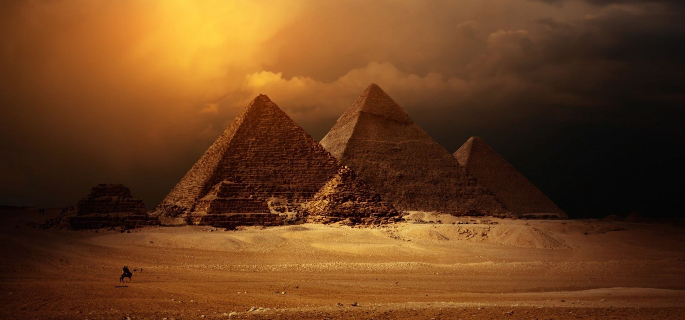
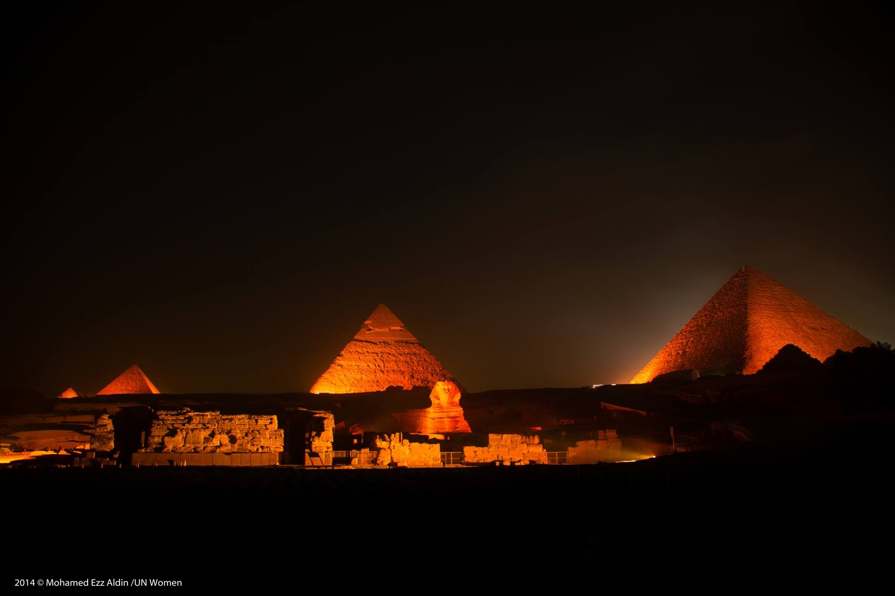

-
Александрийский маяк
-





Александри́йский маяк (известен также как Фарóсский маяк, др.-греч. ὁ Φάρος τῆς Ἀλεξανδρείας, ho pʰá.ros teːs
a.lek.sandréːaːs) — маяк на острове Фарос около египетского города Александрии, одно из семи чудес света.
Был построен во время правления Птолемея II Филадельфа (280—247 году до н. э.). Высота маяка составляла порядка
120—150 метров. На протяжении многих веков он был одним из самых высоких искусственных сооружений в мире, а также
входил в число трёх из Семи чудес древности, сохранявшихся дольше всего (наряду с сохранившейся до настоящего
времени пирамидой Хеопса и Галикарнасским мавзолеем, просуществовавшим в разрушенном виде до 1494 года).
Александрийский маяк был единственным из Семи чудес, имевшим практическое предназначение. Прежде всего, он давал
возможность кораблям без проблем заплывать в порт Александрии, имевший важное стратегическое значение; кроме того,
он служил дополнительным ориентиром морякам на фоне однообразного египетского побережья и, наконец, служил
наблюдательным пунктом для наблюдения за водными просторами (военная угроза Александрии исходила в основном с
моря, поскольку с суши город защищала пустыня).
Маяк был сильно поврежден в результате землетрясений в период 796—1323 годов нашей эры, остатки его конструкции
частично сохранялись до 1480 года, после чего были использованы для строительства цитадели Кайт-Бей на этом месте.
В 1994 году французские археологи обнаружили фрагменты маяка на дне Александрийской восточной гавани. В 2016
году Министерство по делам древностей Египта объявило о намерении превратить подводные руины древней Александрии,
включая Фарос, в подводный музей.